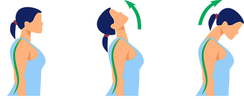

Alongamentos para o pescoço: Aliviando a tensão e a rigidez!

1. Olhando para o céu, sem medo de altura!
Objetivo: Alongar os músculos flexores do pescoço e da nuca.
- Fique em pé com a coluna ereta, como se estivesse pronto para receber uma medalha.
- Olhe para frente, com o olhar reto e nivelado.
- Lentamente, incline a cabeça para trás, como se estivesse admirando o céu azul e as nuvens brancas.
- Sinta o alongamento na parte da frente do pescoço e na nuca.
- Mantenha a posição por 30 segundos, respirando fundo.
- Retorne lentamente à posição inicial.
Dica: Imagine que você está tentando ver um pássaro voando bem alto no céu.
2. Queixo no peito, sem precisar chorar!
Objetivo: Alongar os músculos extensores do pescoço e da nuca.
- Mantenha a postura ereta, como no exercício anterior.
- Olhe para frente, com o olhar reto e nivelado.
- Lentamente, incline a cabeça para frente, como se estivesse triste e precisando chorar (mas sem chorar de verdade, claro!).
- Sinta o alongamento na parte de trás do pescoço e na nuca.
- Mantenha a posição por 30 segundos, respirando fundo.
- Retorne lentamente à posição inicial.
Dica: Imagine que você está tentando tocar o queixo com o peito, sem se machucar.
Dicas extras:
- Respire fundo durante os alongamentos, para maior relaxamento.
- Se sentir dor, pare o exercício e consulte um profissional de saúde.
- Faça os alongamentos algumas vezes ao dia, especialmente se você fica muito tempo sentado em frente ao computador ou dirigindo.
- Combine esses alongamentos com outros exercícios para o pescoço, como rotações e inclinações laterais.
- Consulte um fisioterapeuta para obter uma orientação individualizada e personalizada.
Lembre-se:
Alongar o pescoço regularmente é fundamental para aliviar a tensão, a rigidez e as dores, além de melhorar a amplitude de movimento e prevenir problemas como a hérnia de disco cervical.
Conclusão:
Incorporar esses alongamentos simples à sua rotina diária pode trazer diversos benefícios para o seu pescoço e sua saúde geral.